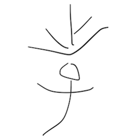

前有雷公“太极”的太极，后有闫芳“大师”的沾衣十八跌；昨天我有幸又认识了一位“国学大师”。素来敬仰季羡林老先生，有过之陈家沟。对“国学”二字敬畏之心不言于表。
此“大师”名为翟鸿燊。甚至在我打完这个名字之后，默认候选词有且只有“大师”二字。可见此人之名声在外。
既为国学大师，虽不及季先生，但也应对古典之精粹信手拈来，知识之储备面面俱到。
这不，视频开头便说道：“孝顺的孝加上文化的文，是教育的教。不孝不教。”好一个拆文解字。对汉字的来源都了如指掌，不愧为“大师”之名。
不巧的是“攵”虽然我们称呼其为“反文旁”，但它的真正读音为“pū”（与扑同音）。而更不巧的是，有个字长的和它很像的字也读“pū”，即“攴”。
实则拖九年义务教育之福，在语文课上我们了解到“攵”为古字“攴”的现代写法。这一点让我感到惊讶，莫非是小学老师搞错了？毕竟我们一直读作反文旁，怎么可能于“文”字毫无关系。
今天下了课我第一时间就去了图书馆三楼语言区。找到了《字源》字典。其中，对教育的“教”是这样描述的：会意兼形声字。甲骨文从“攴”（手持棍形），从子，从爻（表明通）。会督责教导孩子效仿学习使明通道理之意。隶书变楷书后写作教。
它的甲骨文写法是这样的：
其中左上为“爻”；左下为“子”；其右为“攴”。
《说文·教部》说到：“教，上所施下所效也。从攴，从爻，从子。”
说了这么半天，“攴”为何意？戒尺，（轻轻）击打。
若我们回头去看“文”，必会大跌眼镜。
没错。这个外形真的是个人，胸前有画。即为“文”。文字并非文化之本意。文的本意实为“错画”、“纹身”。
如此看来，“教”之“攵”与“文”毫无半点关系。
想必是“大师”一时失误。毕竟“攵”与“文”之相像，十之八九，故，未做考证罢了。
那么刚才我们发现，“教”字除了从“攴”之外，从“爻”，从“子”。这就奇了怪了。“孝”呢？既然“孝”字有子，当然我们要先去查一下“爻”。好了，这不，不查不要紧，一查就出事。
“爻”本意指算筹交叉，为古人学习计算的工具。
还记得前面说过，“教，上所施下所效也。”就是说，老师在那里拨弄算筹，下面的人跟着模仿做。
与“孝”真是天差地别。那怎么能少的了去查一下“孝”字。令我甚是意外：“孝”字与其他字有一个不同，那便是单独增加了一个“注意”内容。而注意的内容是：“教”所从之“孝”不是“孝”。而是由

演变而来。
至于“孝”，它是这样的：

隶书变楷书写作孝。这二字现在一样。只是现代简化汉字而统一的罢了。
“孝”本意为，孩子搀扶老人。如果是孩子拿着算筹搀扶老人过马路，边走边算，才是“不孝”也。
“国学大师”不懂字源而胡扯，就像“医生”不懂病理而胡乱开药罢了。
这倒是让我想起了一个人，张悟本。
陈志春洋
2017年6月8日